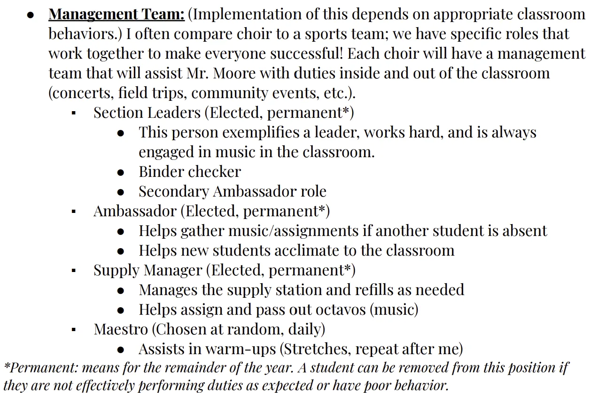
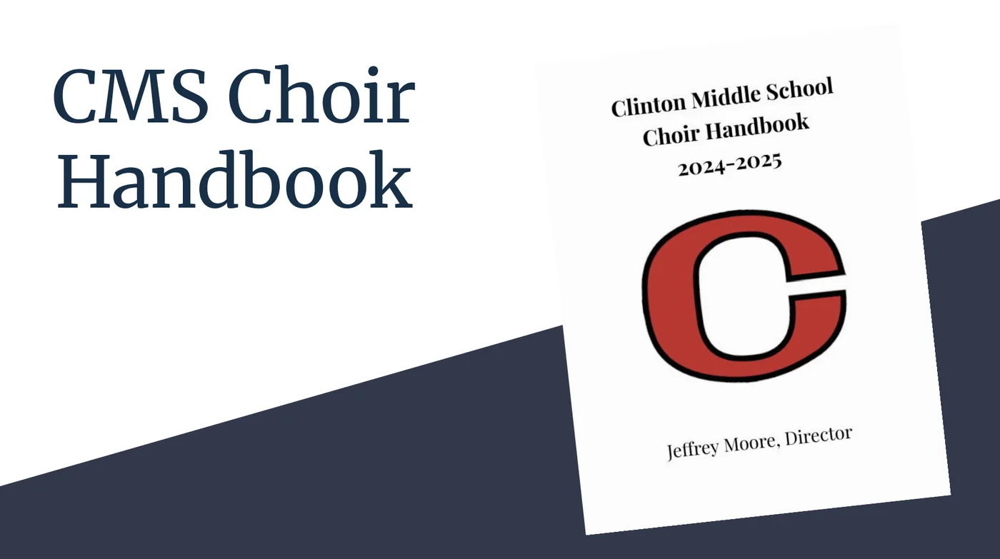

Project Analysis
Building Success: A Program Onboarding Experience
Designing a learner success system that improved ownership, accountability, stakeholder alignment, and performance expectations.
Behavior Change · Program Development

Project Analysis
Designing a learner success system that improved ownership, accountability, stakeholder alignment, and performance expectations.
Design Challenge
When I stepped into the program, establishing structure was one of the biggest challenges. The goal was not simply to improve behavior, but to create clear expectations, stronger communication, and meaningful opportunities for learners to take ownership of the program themselves.
Solution
I developed a learner success system that combined a handbook, leadership pathways, family-facing orientation materials, acknowledgement forms, and evolving performance expectations. I initially created three student leadership positions, but as more learners began showing interest in taking on responsibility, I expanded the system to create additional opportunities for leadership. Maestro became one way to involve a wider range of learners in the daily ownership and operation of rehearsal.
Design decisions
I developed detailed program policies, onboarding materials, and family communications to make expectations clear from the beginning. Being intentionally detailed on the front end reduced confusion and unnecessary follow-up later.
Leadership opportunities expanded as learners began stepping up and showing interest in taking on more responsibility. Management Team and Maestro roles gave more learners a meaningful way to contribute to daily rehearsal ownership.
Clearer, more detailed communication with families resulted in fewer follow-up questions about expectations and logistics, reinforcing the value of giving stakeholders the information they need before they have to ask for it.
Artifacts
Click any artifact to enlarge it.


Results & impact
Design Reflection
This project taught me that improving performance is not always about creating more instruction. Sometimes the larger need is structure: clear expectations, useful resources, consistent communication, opportunities for ownership, and a willingness to adjust the system when learner needs change. What began as an effort to bring consistency to a struggling program eventually became a learning system that students could understand, participate in, and help lead.